suppressMessages(library(tidyverse))
suppressMessages(library(ggdag))
suppressMessages(library(dplyr))
suppressMessages(library(ggraph))
suppressMessages(library(visdat))
suppressMessages(library(broom))
suppressMessages(library(visdat))
suppressMessages(library(mice))
suppressMessages(library(causaldata))
suppressMessages(library(smd))
suppressMessages(library(gtsummary))
suppressMessages(library(survey))
suppressMessages(library(MatchIt))shelter <- read.csv("shelter.csv")
#Delete Animal Name
shelter <- shelter[,-2]
shelter <- shelter[which(shelter$Age >-1),]
#Separate intakeDate and outcomeDate
shelter <- separate(shelter, col=Intake.Date, into=c("IntakeYear","IntakeMonth","IntakeDay"),sep="-")
shelter <- separate(shelter, col=Outcome.Date, into=c("OutcomeYear","OutcomeMonth","OutcomeDay"),sep="-")
shelter$IntakeYear <- as.numeric(shelter$IntakeYear)
shelter$IntakeMonth <- as.numeric(shelter$IntakeMonth)
shelter$IntakeDay <- as.numeric(shelter$IntakeDay)
shelter$OutcomeYear <- as.numeric(shelter$OutcomeYear)
shelter$OutcomeMonth <- as.numeric(shelter$OutcomeMonth)
shelter$OutcomeDay <- as.numeric(shelter$OutcomeDay)
#Calculate time stayed in the shelter
year = (shelter$OutcomeYear - shelter$IntakeYear)*365
month = (shelter$OutcomeMonth - shelter$IntakeMonth)*30
day = (shelter$OutcomeDay - shelter$IntakeDay)
shelter$stayTime <- year+month+day# Check Condition
#shelter <- shelter %>%
# mutate_if(is.character, as.factor)
#nlevels(shelter$Animal.Type)
#nlevels(shelter$Primary.Color)
#nlevels(shelter$Secondary.Color)
#nlevels(shelter$Sex)
#nlevels(shelter$Intake.Condition)
#nlevels(shelter$Intake.Subtype)
#nlevels(shelter$Intake.Type)
#nlevels(shelter$Jurisdiction)
#nlevels(shelter$Outcome.Type)shelterClean <- shelter[, -c(1,6,9,10,14,16,17,18,20,21,22,23)]
shelterClean <- as.data.frame(apply(shelterClean, c(1, 2), str_remove_all, " "))
shelterClean$Age <- as.numeric(shelterClean$Age)
shelterClean$IntakeYear <- as.numeric(shelterClean$IntakeYear)
shelterClean$OutcomeYear <- as.numeric(shelterClean$OutcomeYear)
shelterClean$stayTime <- as.numeric(shelterClean$stayTime)
shelterClean <- shelterClean[-which(shelterClean$Primary.Color == "UNKNOWN"),]
shelter <- shelter[-which(shelter$Primary.Color == "UNKNOWN"),]#Categorize Primary color
for(i in 1:length(shelterClean$Primary.Color)) {
a <- shelterClean$Primary.Color[i]
if(a == "APRICOT" || a == "BLUE" || a == "BLUECREAM" || a == "BLONDE" || a == "CREAM" || a == "FAWN" || a =="GOLD" || a == "GREEN" || a == "ORANGE" || a == "PEACH" || a == "PINK" || a == "RED" || a == "SILVER" || a == "WHEAT" || a == "WHITE" || a == "YELLOW" || a == "CALICO" ||a == "SNOWSHOE" || a == "TRICOLOR") {
shelterClean$PrimaryColor[i] <- "Light-Pure"
}
if(a == "BLUEPT" || a == "CREAMPT" || a == "BCLYNXPT" || a == "LCLYNXPT" || a == "LILYNXPT" || a == "RDLYNXPT" || a == "SLLYNXPT" || a == "STLYNXPT" || a == "FLAMEPT" || a == "L-CPT" || a =="LILACPT" || a == "B-CPT") {
shelterClean$PrimaryColor[i] <- "Light-Point"
}
if(a == "BLUETABBY" || a == "CRMTABBY" || a == "CRMTIGER" || a == "ORGTABBY" || a == "ORGTIGER" || a == "SLVRTABBY" || a == "BLUEMERLE" || a == "BLUETICK" || a == "BLBRINDLE" || a == "BLUEBRIND" || a == "DAPPLE" || a == "YBRINDLE") {
shelterClean$PrimaryColor[i] <- "Light-Tabby"
}
if(a == "BLACK" || a == "BLKSMOKE" || a == "BROWN" || a == "BUFF" || a == "CHOCOLATE" || a == "GRAY" || a == "LIVER" || a == "RUDDY" || a == "SABLE" || a == "SEAL" || a == "TAN" || a == "TORBI" || a == "TORTIE" || a == "CALICODIL" || a == "CALICOPT" || a == "CALICOTAB") {
shelterClean$PrimaryColor[i] <- "Dark-Pure"
}
if(a == "BLLYNXPT" || a == "CRLYNXPT" || a == "LYNXPT" || a == "S-TPT" || a == "SEALPT" || a == "TORTIEPT" || a == "C-TPT" || a == "CHOCPT") {
shelterClean$PrimaryColor[i] <- "Dark-Point"
}
if(a == "BLKTABBY" || a == "BLKTIGER" || a == "BRNTABBY" || a == "BRNTIGER" || a == "GRAYTABBY" || a == "GRAYTIGER" || a == "TORTIEMUT" || a == "TORTIEDIL" || a == "BRBRINDLE" || a == "BRNMERLE" || a == "LIVERTICK" || a == "REDMERLE") {
shelterClean$PrimaryColor[i] <- "Dark-Tabby"
}
}#shelterClean$PrimaryColor <- as.factor(shelterClean$PrimaryColor)
#levels(shelterClean$PrimaryColor)#Separate Primary Color
shelterClean <- separate(shelterClean, col=PrimaryColor, into=c("PrimaryColor","PrimaryPattern"),sep="-")#Categorize Secondary color
for(i in 1:length(shelterClean$Secondary.Color)) {
a <- shelterClean$Secondary.Color[i]
if(a == "APRICOT" || a == "BLUE" || a=="CREAM" ||a=="FAWN" ||a=="GOLD" ||a=="GREEN" ||a=="ORANGE" ||a=="PINK" || a=="PURPLE" ||a=="RED" ||a=="SILVER" ||a=="WHEAT" ||a=="WHITE"||a=="YELLOW" ) {
shelterClean$SecondaryColor[i] <- "Light-Pure"
}
else if(a == "BLBRINDLE" || a== "BLUEPT" || a=="CRMTABBY" || a== "FLAMEPT" ||a=="ORGTABBY" ||a=="SLVRTABBY") {
shelterClean$SecondaryColor[i] <- "Light-Tabby"
}
else if(a == "BLACK" || a== "BLKSMOKE" || a=="BROWN" ||a =="BUFF" ||a== "GRAY" ||a=="SABLE" ||a=="TAN" || a=="TORBI" ||a=="TORTIE" || a == "CALICO" || a=="TRICOLOR") {
shelterClean$SecondaryColor[i] <- "Dark-Pure"
}
else if(a =="BLKTABBY" || a=="BLKTIGER" || a=="BRBRINDLE" || a== "BRNMERLE" ||a == "BRNTABBY" || a == "BRNTIGER" || a == "CHOCPT" || a=="GRAYTABBY" || a=="LYNXPT" || a=="SEALPT" ||a =="TORTIEDIL") {
shelterClean$SecondaryColor[i] <- "Dark-Tabby"
}
else {
shelterClean$SecondaryColor[i] <- "Other-Other"
}
}#Separate Secondary Color
shelterClean <- separate(shelterClean, col=SecondaryColor, into=c("SecondaryColor","SecondaryPattern"),sep="-")#Delete Original Primary&Secondary Color
shelterClean <- shelterClean[,-c(2,3)] #Modify Jurisdiction
#mean(shelter$Jurisdiction == "LONG BEACH")
shelterClean$Jurisdiction <- ifelse(shelterClean$Jurisdiction == "LONGBEACH", "LongBeach", "Others")#Modify Animal Type
#mean(shelter$Animal.Type == "BIRD")
#mean(shelter$Animal.Type == "WILD")
shelterClean$Animal.Type <- ifelse(shelterClean$Animal.Type== "CAT", "CAT", "Other")
shelterClean$Animal.Type <- ifelse(shelter$Animal.Type== "DOG", "DOG", shelterClean$Animal.Type)
#mean(shelterClean$Animal.Type == "Other")#Modify Intake.Condition
#mean(shelter$Intake.Condition == "WELFARE SEIZURES")
shelterClean$Intake.Condition <- ifelse(shelterClean$Intake.Condition== "NORMAL", "NORMAL", "Other")
shelterClean$Intake.Condition <- ifelse(shelter$Intake.Condition == "UNDER AGE/WEIGHT", "UNDERAGE/WEIGHT", shelterClean$Intake.Condition)#Modify Intake.Type
#mean(shelter$Intake.Type == "STRAY")
#mean(shelter$Intake.Type == "WILDLIFE")
shelterClean$Intake.Type <- ifelse(shelterClean$Intake.Type== "STRAY", "STRAY", "Other")
shelterClean$Intake.Type <- ifelse(shelter$Intake.Type == "WILDLIFE", "WILDLIFE", shelterClean$Intake.Type)#Modify Sex
#mean(shelter$Sex == "Unknown")
shelterClean$Sex <- ifelse(shelterClean$Sex== "Spayed", "Spayed/Neutered", shelterClean$Sex)
shelterClean$Sex <- ifelse(shelterClean$Sex == "Neutered", "Spayed/Neutered", shelterClean$Sex)#Modify Intake.SubType
# mean(shelter$Intake.Subtype == "FIELD")
# mean(shelter$Intake.Subtype == "OTC")
shelterClean$Intake.Subtype <- ifelse(shelterClean$Intake.Subtype== "FIELD", "FIELD", "Other")
shelterClean$Intake.Subtype <- ifelse(shelter$Intake.Subtype == "OTC", "OTC", shelterClean$Intake.Subtype)# Check Condition after cleaning
shelterClean <- shelterClean %>%
mutate_if(is.character, as.factor)
#shelterClean$Age <- as.integer(shelterClean$Age)
#shelterClean$IntakeYear <- as.integer(shelterClean$IntakeYear)
#shelterClean$OutcomeYear <- as.integer(shelterClean$OutcomeYear)
#shelterClean$stayTime <- as.integer(shelterClean$stayTime)
#nlevels(shelterClean$Animal.Type)
#nlevels(shelterClean$PrimaryColor)
#nlevels(shelterClean$PrimaryPattern)
#nlevels(shelterClean$SecondaryColor)
#nlevels(shelterClean$SecondaryPattern)
#nlevels(shelterClean$Sex)
#nlevels(shelterClean$Intake.Condition)
#nlevels(shelterClean$Intake.Subtype)
#nlevels(shelterClean$Intake.Type)
#nlevels(shelterClean$Jurisdiction)
#nlevels(shelterClean$Outcome.Type)#Check missing data
shelterClean %>%
#select(Age, stayTime) %>%
vis_dat()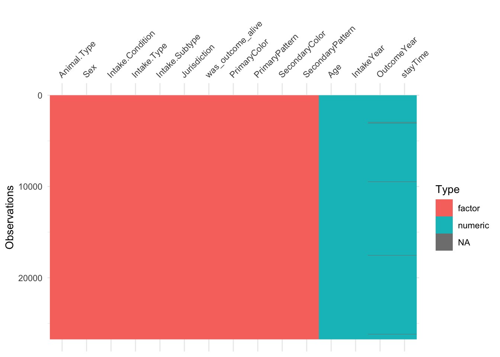
#Remove missing data
#shelterClean <- shelterClean[!is.na(shelterClean$stayTime),]
shelterClean <- na.omit(shelterClean)
shelterClean$Jurisdiction <- ifelse(shelterClean$Jurisdiction == "LongBeach", 1, 0)#Identify factors
Jurisdiction ~ Intake.Type + Age + Sex + Animal.Type## Jurisdiction ~ Intake.Type + Age + Sex + Animal.TypestayTime ~ Animal.Type + Sex + Age + Condition## stayTime ~ Animal.Type + Sex + Age + ConditionCondition ~ Age + Animal.Type + Sex + Appearance + Intake.Condition + Intake.Type + Intake.Subtype + IntakeYear + Outcome.Subtype + OutcomeYear## Condition ~ Age + Animal.Type + Sex + Appearance + Intake.Condition +
## Intake.Type + Intake.Subtype + IntakeYear + Outcome.Subtype +
## OutcomeYearAppearance ~ Animal.Type + Sex + Age + PriColor + PriPattern + SecondaryColor + SecondaryPattern## Appearance ~ Animal.Type + Sex + Age + PriColor + PriPattern +
## SecondaryColor + SecondaryPattern#Create Causal Diagram
dagify(
Jurisdiction ~ Intake.Type + Age + Sex + Animal.Type + Appearance,
Appearance ~ Animal.Type + Sex + Age + PriColor + PriPattern + SecondaryColor + SecondaryPattern,
stayTime ~ Animal.Type + Sex + Age + Condition,
Condition ~ Age + Animal.Type + Sex + Intake.Condition + Intake.Type + Intake.Subtype + IntakeYear + IntakeReason + OutcomeYear + OutAlive,
exposure = "Jurisdiction",
outcome = "stayTime"
) %>%
ggdag(text_col = "CornFlower Blue", layout = "kk") +
theme_dag_grey() 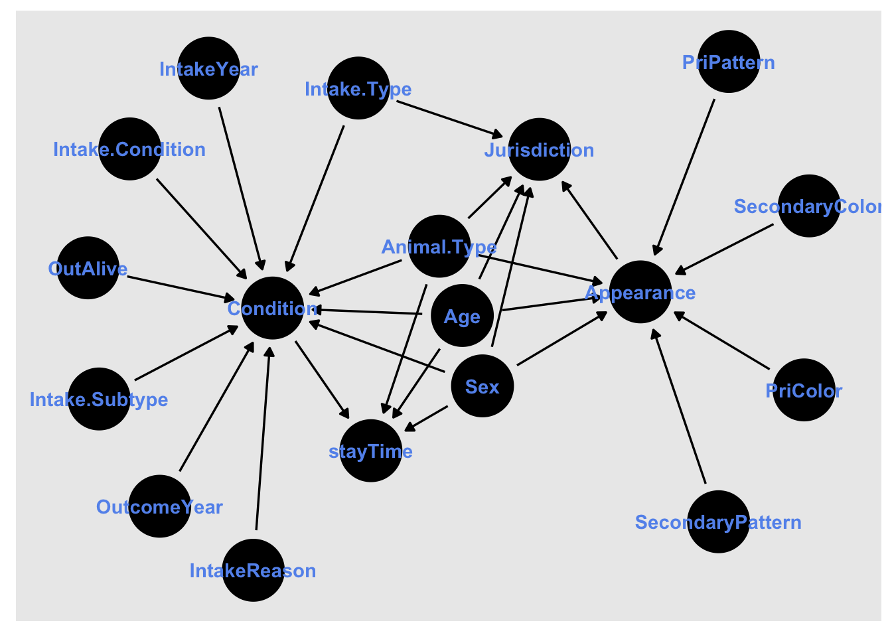
#Check Confounding Path & Adjustment
dagify(
Jurisdiction ~ Intake.Type + Age + Sex + Animal.Type + Appearance,
Appearance ~ Animal.Type + Sex + Age + PriColor + PriPattern + SecondaryColor + SecondaryPattern,
stayTime ~ Animal.Type + Sex + Age + Condition,
Condition ~ Age + Animal.Type + Sex + Intake.Condition + Intake.Type + Intake.Subtype + IntakeYear + IntakeReason + OutcomeYear + outAlive,
exposure = "Jurisdiction",
outcome = "stayTime",
latent = c("Appearance", "Condition")
) %>%
ggdag_adjustment_set(text_col = "Dark Green", text_size = 2)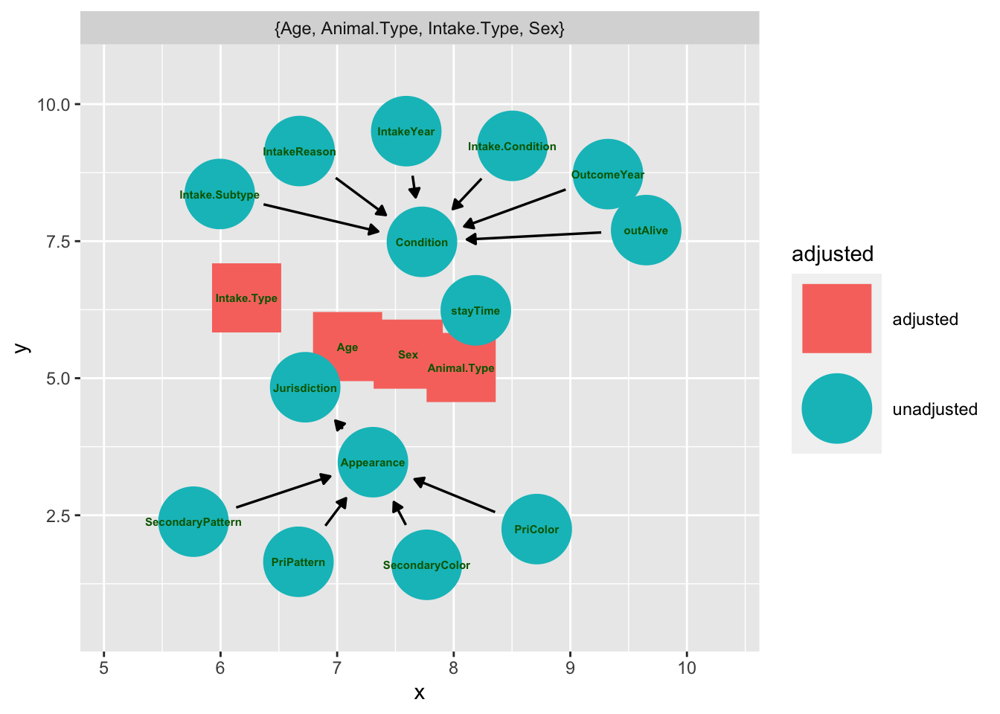
#Fit propensity score model
shelterClean <-
glm(Jurisdiction ~ Intake.Type + Age + Sex + Animal.Type,
data = shelterClean,
family = binomial()) %>%
augment(type.predict = "response",
data = shelterClean)
shelterClean %>%
select(Jurisdiction, .fitted)## # A tibble: 26,404 × 2
## Jurisdiction .fitted
## <dbl> <dbl>
## 1 1 0.845
## 2 1 0.882
## 3 1 0.861
## 4 1 0.865
## 5 1 0.885
## 6 1 0.879
## 7 1 0.836
## 8 1 0.849
## 9 0 0.849
## 10 1 0.884
## # … with 26,394 more rows#Examine the distribution of propensity score between the two groups
df_plot <- shelterClean %>%
tidyr::pivot_wider(names_from = Jurisdiction,
values_from = .fitted,
names_prefix = "Jurisdiction_")library(ggplot2)ggplot(df_plot) +
geom_histogram(bins = 150,
aes(x = Jurisdiction_1),
fill = "cornflower blue") +
geom_histogram(bins = 150,
aes(x = Jurisdiction_0,
y = -stat(count)),
fill = "orange") +
scale_y_continuous("count", label = abs) +
scale_x_continuous("propensity score") +
annotate(geom = "label",
x = 0.7,
y = 200,
label = "Jurisdiction in LongBeach"
) +
annotate(geom = "label",
x = 0.7,
y = -200,
label = "Jurisdiction in Other Area"
) +
theme_minimal()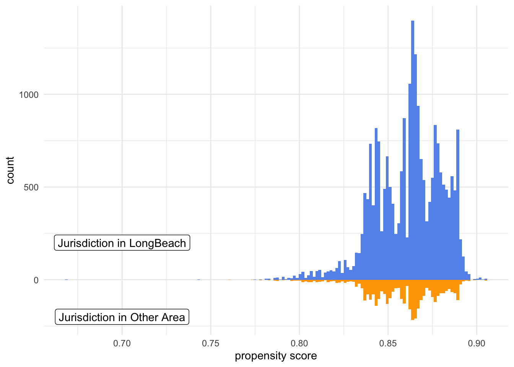
#Unweighted table for exposure groups
svy_des <- svydesign(
ids = ~1,
data = shelterClean
)
svy_des %>%
tbl_svysummary(
by = Jurisdiction,
include = c("Intake.Type",
"Age",
"Sex",
"Animal.Type"
)
) %>%
add_overall()| Characteristic | Overall, N = 26,4041 | 0, N = 3,6751 | 1, N = 22,7291 |
|---|---|---|---|
| Intake.Type | |||
| Other | 4,060 (15%) | 598 (16%) | 3,462 (15%) |
| STRAY | 20,094 (76%) | 2,714 (74%) | 17,380 (76%) |
| WILDLIFE | 2,250 (8.5%) | 363 (9.9%) | 1,887 (8.3%) |
| Age | 4.0 (3.0, 6.0) | 4.0 (2.0, 6.0) | 4.0 (3.0, 6.0) |
| Sex | |||
| Female | 6,422 (24%) | 838 (23%) | 5,584 (25%) |
| Male | 6,901 (26%) | 911 (25%) | 5,990 (26%) |
| Spayed/Neutered | 8,869 (34%) | 1,320 (36%) | 7,549 (33%) |
| Unknown | 4,212 (16%) | 606 (16%) | 3,606 (16%) |
| Animal.Type | |||
| CAT | 13,685 (52%) | 1,957 (53%) | 11,728 (52%) |
| DOG | 9,545 (36%) | 1,187 (32%) | 8,358 (37%) |
| Other | 3,174 (12%) | 531 (14%) | 2,643 (12%) |
| 1 n (%); Median (IQR) | |||
#Calculate ATO
shelterClean <- shelterClean %>%
mutate(w_ato = (1-.fitted)*Jurisdiction + .fitted*(1-Jurisdiction))#Weighted Distribution Plot
ggplot(df_plot) +
geom_histogram(bins = 150,
alpha = 0.5,
aes(x = Jurisdiction_1),
fill = "cornflower blue") +
geom_histogram(bins = 150,
aes(x = Jurisdiction_1,
weight = shelterClean$w_ato),
fill = "cornflower blue") +
geom_histogram(bins = 150,
alpha = 0.5,
aes(x = Jurisdiction_0,
y = -stat(count)),
fill = "orange") +
geom_histogram(bins = 150,
aes(x = Jurisdiction_0,
y = -stat(count),
weight = shelterClean$w_ato),
fill = "orange") +
annotate(geom = "label",
x = 0.7,
y = 200,
label = "Jurisdiction in LongBeach"
) +
annotate(geom = "label",
x = 0.7,
y = -200,
label = "Jurisdiction in Other Area"
) +
theme_minimal()## Warning: Removed 3675 rows containing non-finite values (stat_bin).
## Removed 3675 rows containing non-finite values (stat_bin).## Warning: Removed 22729 rows containing non-finite values (stat_bin).
## Removed 22729 rows containing non-finite values (stat_bin).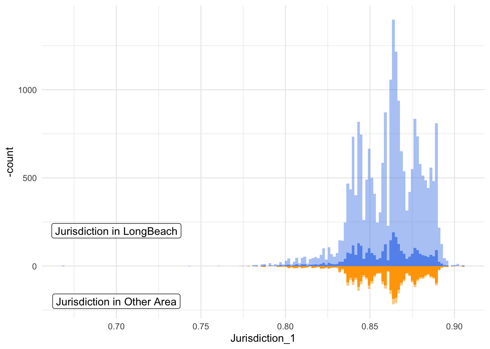
#Weighted table
svy_des <- svydesign(
ids = ~1,
data = shelterClean,
weights = ~ w_ato
)
svy_des %>%
tbl_svysummary(
by = Jurisdiction,
include = c("Intake.Type",
"Age",
"Sex",
"Animal.Type"
)
) %>%
add_overall()| Characteristic | Overall, N = 6,3081 | 0, N = 3,1541 | 1, N = 3,1541 |
|---|---|---|---|
| Intake.Type | |||
| Other | 1,013 (16%) | 506 (16%) | 506 (16%) |
| STRAY | 4,686 (74%) | 2,343 (74%) | 2,343 (74%) |
| WILDLIFE | 609 (9.6%) | 304 (9.6%) | 304 (9.6%) |
| Age | 4.0 (3.0, 6.0) | 4.0 (2.0, 6.0) | 4.0 (3.0, 6.0) |
| Sex | |||
| Female | 1,455 (23%) | 728 (23%) | 728 (23%) |
| Male | 1,578 (25%) | 789 (25%) | 789 (25%) |
| Spayed/Neutered | 2,239 (35%) | 1,120 (35%) | 1,120 (35%) |
| Unknown | 1,036 (16%) | 518 (16%) | 518 (16%) |
| Animal.Type | |||
| CAT | 3,350 (53%) | 1,675 (53%) | 1,675 (53%) |
| DOG | 2,076 (33%) | 1,038 (33%) | 1,038 (33%) |
| Other | 882 (14%) | 441 (14%) | 441 (14%) |
| 1 n (%); Median (IQR) | |||
#Calculate SMDs
smds <- shelterClean %>%
summarize(
across(
c(Age,Sex, Intake.Condition, Intake.Type, Intake.Subtype, Animal.Type, OutcomeYear, was_outcome_alive, SecondaryColor, SecondaryPattern, PrimaryColor, PrimaryPattern),
list(
unweighted = ~smd(.x, Jurisdiction)$estimate,
ato.weighted = ~smd(.x, Jurisdiction, w_ato)$estimate
)
)
)#Pivot SMDs
plot_df <- smds %>%
pivot_longer(
everything(),
values_to = "SMD",
names_to = c("variable", "Method"),
names_pattern = "(.*)_(.*)"
) %>%
arrange(desc(Method), abs(SMD)) %>%
mutate(variable = fct_inorder(variable))#Create Love Plots
ggplot(
data = plot_df,
aes(x = abs(SMD), y = variable, group = Method, color = Method)) +
geom_line(orientation = "y") +
geom_point() +
geom_vline(xintercept = 0.1,
lty = 2)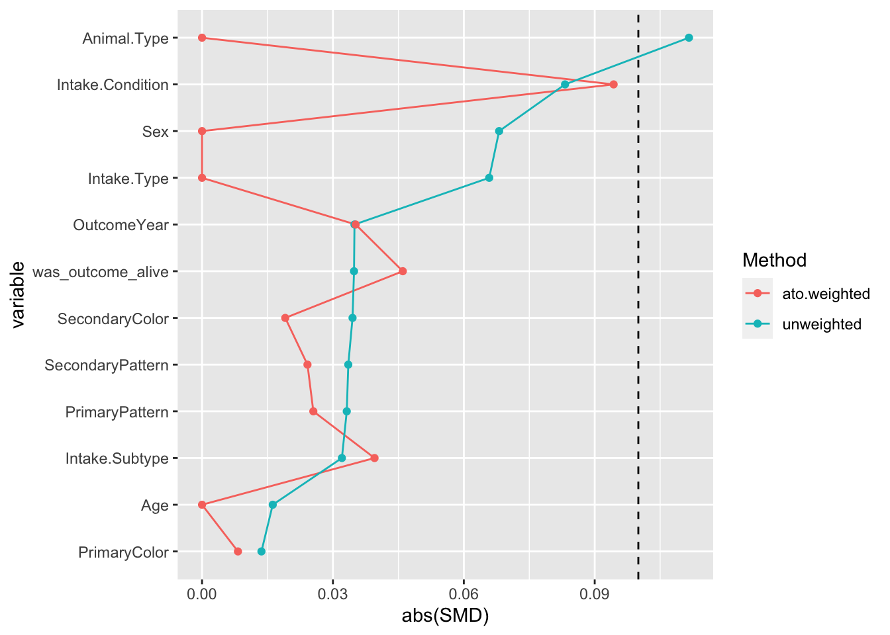
#Fit propensity score model
shelterClean <-
glm(Jurisdiction ~ Intake.Type + Age + Sex + Animal.Type + Intake.Condition + OutcomeYear + was_outcome_alive + Intake.Subtype,
data = shelterClean,
family = binomial()) %>%
augment(type.predict = "response",
data = shelterClean)
shelterClean %>%
select(Jurisdiction, .fitted)## # A tibble: 26,404 × 2
## Jurisdiction .fitted
## <dbl> <dbl>
## 1 1 0.799
## 2 1 0.882
## 3 1 0.866
## 4 1 0.857
## 5 1 0.885
## 6 1 0.890
## 7 1 0.859
## 8 1 0.844
## 9 0 0.844
## 10 1 0.898
## # … with 26,394 more rows#Calculate ATO
shelterClean <- shelterClean %>%
mutate(w_ato = (1-.fitted)*Jurisdiction + .fitted*(1-Jurisdiction))#Weighted Distribution Plot
ggplot(df_plot) +
geom_histogram(bins = 150,
alpha = 0.5,
aes(x = Jurisdiction_1),
fill = "cornflower blue") +
geom_histogram(bins = 150,
aes(x = Jurisdiction_1,
weight = shelterClean$w_ato),
fill = "cornflower blue") +
geom_histogram(bins = 150,
alpha = 0.5,
aes(x = Jurisdiction_0,
y = -stat(count)),
fill = "orange") +
geom_histogram(bins = 150,
aes(x = Jurisdiction_0,
y = -stat(count),
weight = shelterClean$w_ato),
fill = "orange") +
annotate(geom = "label",
x = 0.7,
y = 200,
label = "Jurisdiction in LongBeach"
) +
annotate(geom = "label",
x = 0.7,
y = -200,
label = "Jurisdiction in Other Area"
) +
theme_minimal()#Calculate SMDs
smds <- shelterClean %>%
summarize(
across(
c(Age,Sex, Intake.Condition, Intake.Type, Intake.Subtype, Animal.Type, OutcomeYear, was_outcome_alive, SecondaryColor, SecondaryPattern, PrimaryColor, PrimaryPattern),
list(
unweighted = ~smd(.x, Jurisdiction)$estimate,
ato.weighted = ~smd(.x, Jurisdiction, w_ato)$estimate
)
)
)#Pivot SMDs
plot_df <- smds %>%
pivot_longer(
everything(),
values_to = "SMD",
names_to = c("variable", "Method"),
names_pattern = "(.*)_(.*)"
) %>%
arrange(desc(Method), abs(SMD)) %>%
mutate(variable = fct_inorder(variable))#Create Love Plots
ggplot(
data = plot_df,
aes(x = abs(SMD), y = variable, group = Method, color = Method)) +
geom_line(orientation = "y") +
geom_point() +
geom_vline(xintercept = 0.1,
lty = 2)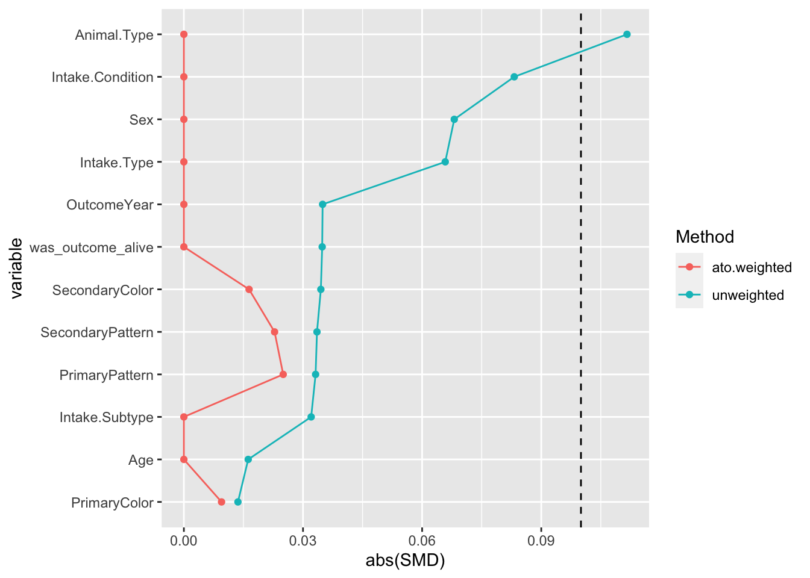
#Unweighted eCDF
#age
par(mfrow = c(1,3))
ggplot(shelterClean,
aes(x = Age, group = Jurisdiction,
color = factor(Jurisdiction))) +
stat_ecdf() +
scale_color_manual("Take In LongBeach",
values = c("orange","dark green"),
labels = c("No","Yes")
) +
ylab("Proportion <=x")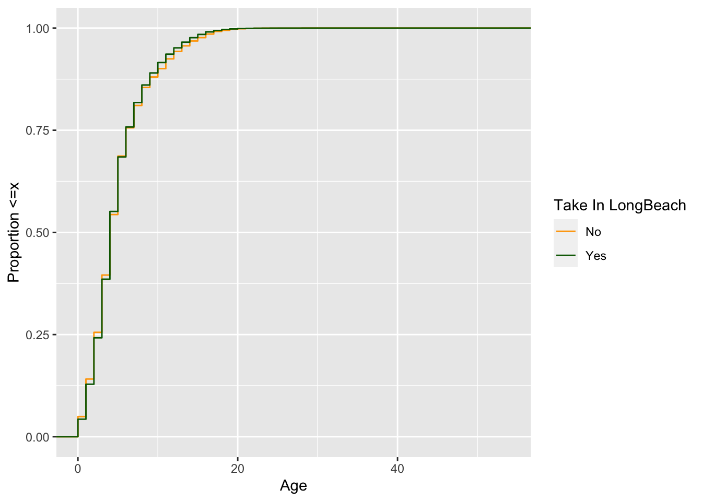
#IntakeYear
ggplot(shelterClean,
aes(x = IntakeYear, group = Jurisdiction,
color = factor(Jurisdiction))) +
stat_ecdf() +
scale_color_manual("Take In LongBeach",
values = c("orange","dark green"),
labels = c("No","Yes")
) +
ylab("Proportion <=x") 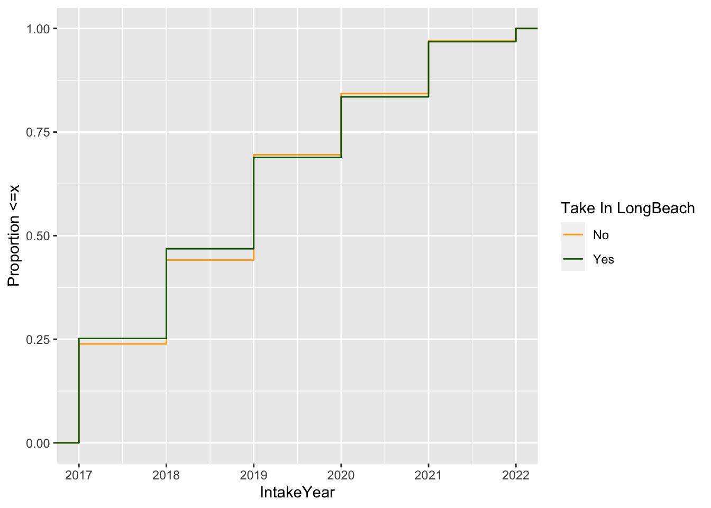
#OutcomeYear
ggplot(shelterClean,
aes(x = OutcomeYear, group = Jurisdiction,
color = factor(Jurisdiction))) +
stat_ecdf() +
scale_color_manual("Take In LongBeach",
values = c("orange","dark green"),
labels = c("No","Yes")
) +
ylab("Proportion <=x")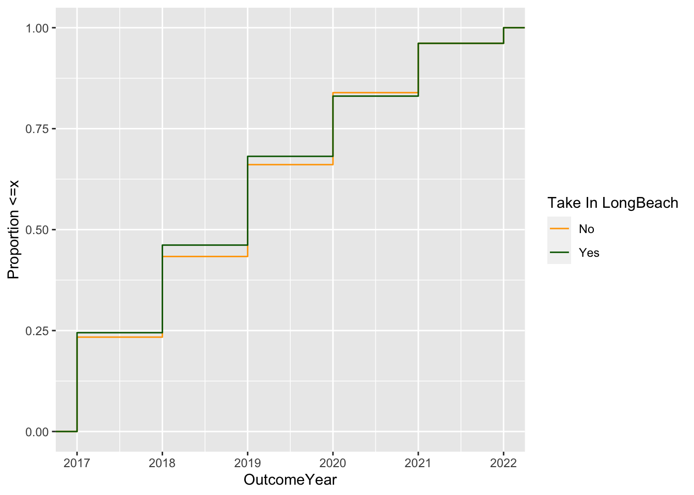
#Weighted eCDFs
#age
par(mfrow = c(1,3))
ecdf_1 <- shelterClean %>%
filter(Jurisdiction == 1) %>%
arrange(Age) %>% #from small to large value
mutate(cum_pct_ato = cumsum(w_ato) / sum(w_ato))
ecdf_0 <- shelterClean %>%
filter(Jurisdiction == 0) %>%
arrange(Age) %>%
mutate(cum_pct_ato = cumsum(w_ato) / sum(w_ato))
ggplot(ecdf_1, aes(x = Age, y = cum_pct_ato)) +
geom_line(color = "dark green") +
geom_line(data = ecdf_0,
aes(x = Age, y = cum_pct_ato),
color = "orange") +
ylab("Proportion <=x")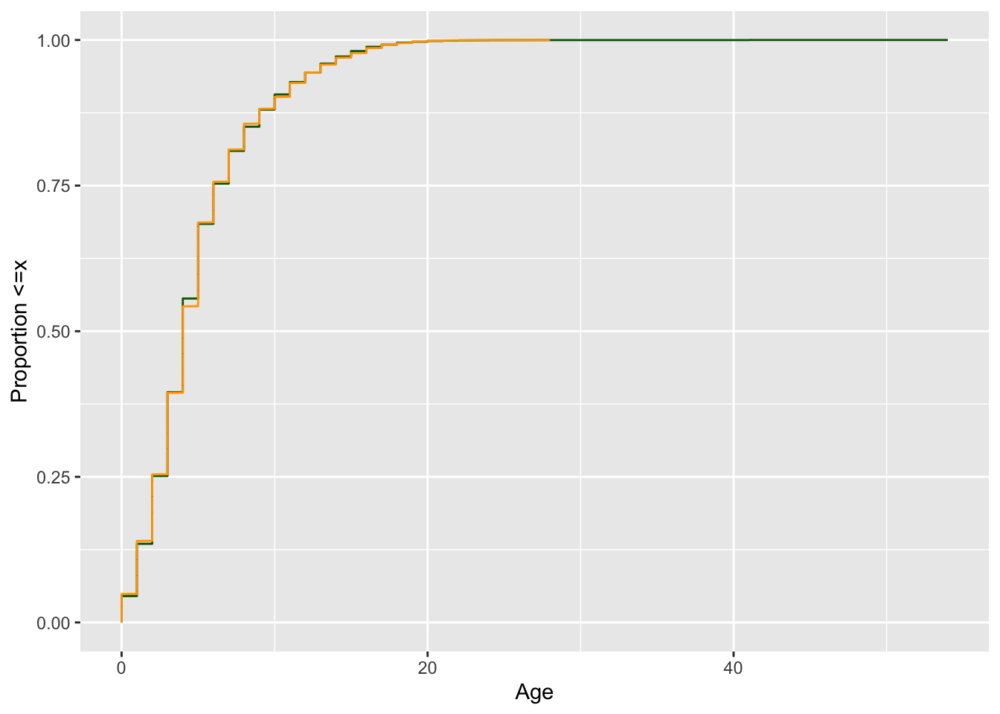
#IntakeYear
ecdf_1 <- shelterClean %>%
filter(Jurisdiction == 1) %>%
arrange(IntakeYear) %>% #from small to large value
mutate(cum_pct_ato = cumsum(w_ato) / sum(w_ato))
ecdf_0 <- shelterClean %>%
filter(Jurisdiction == 0) %>%
arrange(IntakeYear) %>%
mutate(cum_pct_ato = cumsum(w_ato) / sum(w_ato))
ggplot(ecdf_1, aes(x = IntakeYear, y = cum_pct_ato)) +
geom_line(color = "dark green") +
geom_line(data = ecdf_0,
aes(x = IntakeYear, y = cum_pct_ato),
color = "orange") +
ylab("Proportion <=x")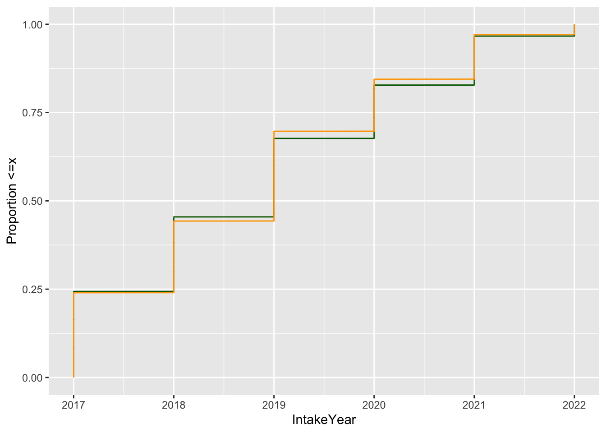
#OutcomeYear
ecdf_1 <- shelterClean %>%
filter(Jurisdiction == 1) %>%
arrange(OutcomeYear) %>% #from small to large value
mutate(cum_pct_ato = cumsum(w_ato) / sum(w_ato))
ecdf_0 <- shelterClean %>%
filter(Jurisdiction == 0) %>%
arrange(OutcomeYear) %>%
mutate(cum_pct_ato = cumsum(w_ato) / sum(w_ato))
ggplot(ecdf_1, aes(x = OutcomeYear, y = cum_pct_ato)) +
geom_line(color = "dark green") +
geom_line(data = ecdf_0,
aes(x = OutcomeYear, y = cum_pct_ato),
color = "orange") +
ylab("Proportion <=x")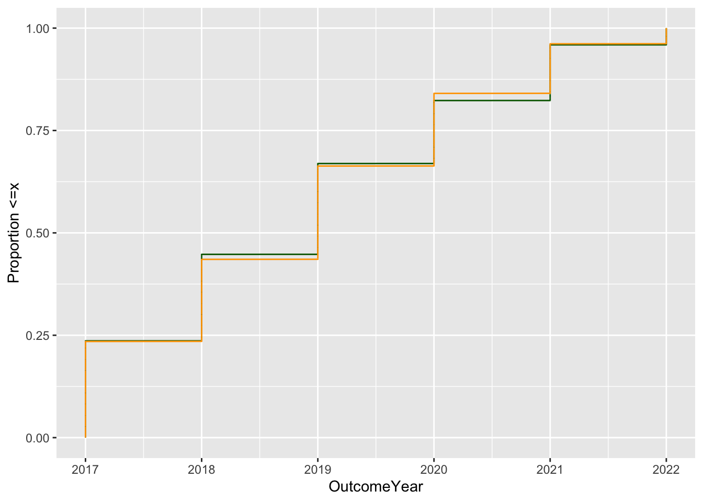
suppressMessages(library(rsample))
suppressMessages(library(PSW))#Estimate average causal effect with uncertainty by bootstrap
fit_ipw <- function(splits, ...) { #split is the orginal dataframe
.df <- analysis(splits) #pull out the split into new dataframe
propensity_model <- glm(Jurisdiction ~ Intake.Type + Age + Sex + Animal.Type + Intake.Condition + OutcomeYear + was_outcome_alive + Intake.Subtype,
data = .df,
family = binomial())
.df <- propensity_model %>%
augment(type.predict = "response", data=.df) %>%
mutate(ato = (1 -.fitted) * Jurisdiction + .fitted * (1 - Jurisdiction))
lm(stayTime ~ Jurisdiction, data = .df, weights = ato) %>%
tidy()
}ipw_results <- bootstraps(shelterClean, 1000, apparent = TRUE) %>%
mutate(results = map(splits, fit_ipw))estimate <- int_t(ipw_results, results) %>%
filter(term=="Jurisdiction")
estimate## # A tibble: 1 × 6
## term .lower .estimate .upper .alpha .method
## <chr> <dbl> <dbl> <dbl> <dbl> <chr>
## 1 Jurisdiction -5.01 -3.37 -1.82 0.05 student-t#Check missing data
shelter <- read.csv("shelter.csv")
shelter %>%
select(Age, DOB, Outcome.Date, Intake.Type, Sex, Animal.Type, Intake.Condition, was_outcome_alive, Intake.Subtype, Jurisdiction) %>%
vis_dat()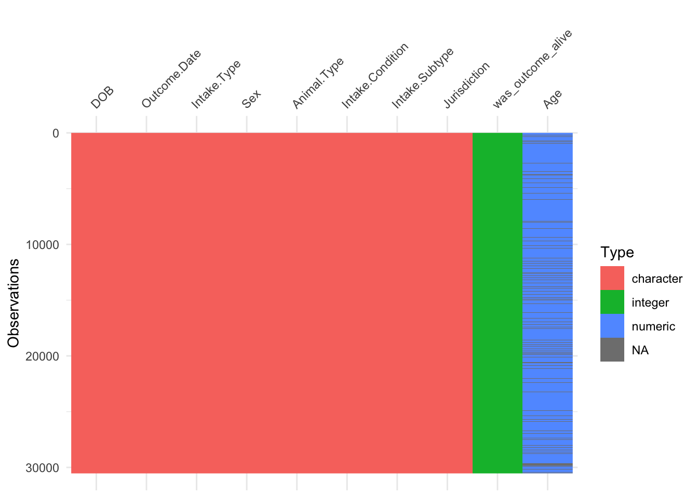
shelter$Jurisdiction <- ifelse(shelter$Jurisdiction == "LONG BEACH", "LongBeach", "Others")
shelter %>%
tbl_summary(
by = Jurisdiction,
include = c("Age")
) %>%
add_overall()| Characteristic | Overall, N = 30,5361 | LongBeach, N = 25,9821 | Others, N = 4,5541 |
|---|---|---|---|
| Age | 4.0 (3.0, 6.0) | 4.0 (3.0, 6.0) | 4.0 (2.0, 6.0) |
| Unknown | 3,774 | 2,930 | 844 |
| 1 Median (IQR) | |||
#2930/25982
#844/4554suppressMessages(library(tipr))
#smd <- seq(0.1,2, by = 0.1)
adjust_coef_with_binary(effect = c(-5.00, -3.39, -1.89),
exposed_p = 0.11,
unexposed_p = 0.185,
outcome_association = 2,
verbose = FALSE)## # A tibble: 3 × 5
## effect_adjusted effect_observed exposed_p unexposed_p outcome_association
## <dbl> <dbl> <dbl> <dbl> <dbl>
## 1 -4.75 -5 0.11 0.185 2
## 2 -3.14 -3.39 0.11 0.185 2
## 3 -1.64 -1.89 0.11 0.185 2